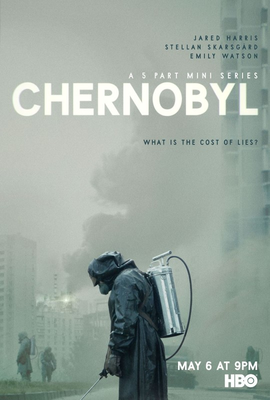

Chernobyl


La miniserie de televisión de 2019 Chernobyl ha recibido elogios generalizados de la crítica por su dramática interpretación del desastre nuclear de Chernobyl de 1986 en la Ucrania soviética y los esfuerzos de limpieza que siguieron. Creada y escrita por Craig Mazin y dirigida por Johan Renck, la miniserie de cinco episodios narra las consecuencias inmediatas del catastrófico accidente nuclear en la central nuclear de Chernobyl, uno de los peores desastres provocados por el hombre de la historia.
Comienza el 26 de abril de 1986, el día en que el reactor de Chernobyl explotó después de que una prueba de seguridad saliera terriblemente mal, y sigue a los diversos personajes involucrados en contener la lluvia radiactiva. Esto incluye a funcionarios del gobierno y de la planta como Anatoly Dyatlov (Paul Ritter) y Boris Shcherbina (Stellan Skarsgård), así como científicos como Valery Legasov (Jared Harris), que son contratados para evaluar los daños. La miniserie destaca el inmenso sufrimiento humano causado por la exposición excesiva a la radiación, así como el heroísmo de los socorristas, trabajadores de plantas y voluntarios que ponen sus vidas en riesgo.
Chernobyl se destaca por su drama apasionante y su atención a la precisión histórica. Si bien algunos personajes son compuestos, los eventos descritos son en gran medida fieles a la cronología de la vida real y la escala del desastre. Las actuaciones, el guión, la dirección y el diseño de producción trabajan juntos para transportar al espectador a la Ucrania soviética de 1986. Los críticos elogiaron a Chernobyl como un relato fascinante y aleccionador del desastre, destacando tanto la incompetencia del gobierno como el sacrificio individual. Con su tema desgarrador y su ejecución estelar, Chernobyl surgió como uno de los eventos televisivos más aclamados de 2019.